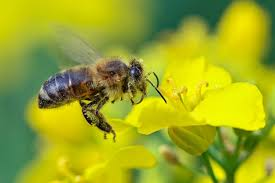
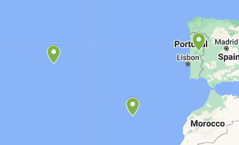

História e Ciência
Investigação Contínua
Esta coleção surgiu como resultado de investigações científicas profundas. Os primeiros espécimes datam de 1992, e o acervo continua a crescer através de campanhas de campo e estudos genéticos.
A maioria dos exemplares encontra-se preparada e fixada a seco, servindo de base para estudos de biologia, ecologia e sistemática.
1992Ano de Fundação
CicadellidaeFamília Predominante
🔬 Sistemática e Biologia
🧬 Estudos de Genética
🌿 Fixação a Seco
Galeria de Espécimes

Âmbito Territorial
Área Geográfica
Esta coleção abrange uma vasta área que compreende os arquipélagos da Madeira e Açores, bem como diversas localidades de Portugal Continental.
